01 / OVERVIEW派系概览
没有魔法，只有斧头和颅骨。 推荐首发领主：斯卡布兰德。血神恩赐与颅骨王座：杀戮积累怒气，解锁增益与单位。
混沌 · 近战 / 冲锋
血神恩赐与颅骨王座：杀戮积累怒气，解锁增益与单位。
为什么玩它
纯近战冲锋，简单粗暴。
要注意什么
无魔法、无远程，操作和战损要求高。
用血肉猎犬 / 血兽包抄，斯卡布兰德直冲敌将；接受高战损。
本页数值为 Patch 9.0.4 / Ultra 规模 / 0 级，不含科技、技能、装备、领主光环与战场增益。维护费是战役基础值，受难度、补给线与派系减免影响。
02 / RECOMMENDED推荐兵种
每个派系挑 6 个最值得先练、先招、先知道的名字。不是“唯一答案”，但能覆盖扛线、输出、机动和攻城。

核心。
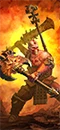
高输出、适合斩将。

快速包抄。

高冲锋。
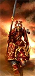
极高冲锋。

最强单体之一。
03 / ROSTER完整兵种表
按类别展开。T 是招募等级；兵模是单位里的模型数；远程 / 射程一栏，前者是每 10 秒全队伤害，后者是射程。名将团单独列在最后。
领主与传奇领主9 个单位
| 兵种 | T | 兵模 | 生命 | 护甲 | 领导 | 速度 | 近攻 | 近防 | 武器 | 远程 / 射程 | 维护 |
|---|---|---|---|---|---|---|---|---|---|---|---|
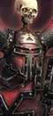 Arbaal the UndefeatedLord |
— | 1 | 5,470 | 120 | 80 | 33 | 65 | 55 | 520 | — | 312 |
BloodspeakerLord |
— | 1 | 4,188 | 60 | 70 | 35 | 48 | 44 | 440 | — | 187 |
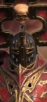 Chaos Lord of KhorneLord |
— | 1 | 4,640 | 110 | 75 | 33 | 65 | 50 | 510 | — | 250 |
 Daemon Prince of KhorneLord |
— | 1 | 7,600 | 60 | 80 | 80 | 55 | 50 | 520 | — | 475 |
 Exalted BloodthirsterLord |
— | 1 | 8,588 | 90 | 85 | 95 | 70 | 46 | 580 | — | 625 |
 Herald of KhorneLord |
— | 1 | 4,448 | 40 | 70 | 48 | 65 | 40 | 400 | — | 225 |
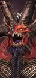 Skarbrand the ExiledLord |
— | 1 | 9,448 | 90 | 85 | 80 | 75 | 50 | 620 | — | 650 |
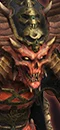 SkulltakerLord |
— | 1 | 5,848 | 60 | 80 | 48 | 70 | 55 | 530 | — | 275 |
Valkia the BloodyLord |
— | 1 | 5,600 | 100 | 80 | 95 | 54 | 55 | 400 | — | 325 |
英雄6 个单位
| 兵种 | T | 兵模 | 生命 | 护甲 | 领导 | 速度 | 近攻 | 近防 | 武器 | 远程 / 射程 | 维护 |
|---|---|---|---|---|---|---|---|---|---|---|---|
 BloodreaperMelee Specialist |
— | 1 | 4,048 | 40 | 65 | 46 | 60 | 35 | 375 | — | 200 |
Cultist of KhorneMelee Specialist |
— | 1 | 11,250 | 70 | 65 | 38 | 35 | 25 | 375 | — | 250 |
Exalted Hero of KhorneMelee Specialist |
— | 1 | 4,068 | 110 | 70 | 33 | 60 | 40 | 440 | — | 250 |
 KaranakWar Beast |
— | 1 | 4,850 | 50 | 80 | 95 | 55 | 45 | 580 | — | — |
Scyla AnfingrimmMonster |
— | 1 | 7,270 | 50 | 80 | 65 | 52 | 30 | 550 | — | — |
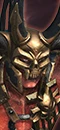 Skarr BloodwrathDuellist |
— | 1 | 5,600 | 80 | 80 | 46 | 60 | 48 | 460 | — | — |
近战步兵13 个单位
| 兵种 | T | 兵模 | 生命 | 护甲 | 领导 | 速度 | 近攻 | 近防 | 武器 | 远程 / 射程 | 维护 |
|---|---|---|---|---|---|---|---|---|---|---|---|
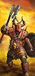 Marauders of KhorneAxe Infantry |
T1 | 120 | 9,360 | 35 | 60 | 35 | 34 | 23 | 28 | — | 100 |
Bloodletters of KhorneGreatsword Infantry |
T2 | 100 | 8,000 | 35 | 75 | 38 | 34 | 26 | 34 | — | 200 |
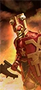 Chaos Warriors of KhorneAxe Infantry |
T2 | 100 | 9,000 | 110 | 75 | 28 | 36 | 39 | 36 | — | 200 |
Chaos Warriors of Khorne (Dual Weapons)Dual Axe Infantry |
T2 | 100 | 9,000 | 110 | 75 | 28 | 36 | 33 | 52 | — | 238 |
Chaos Warriors of Khorne (Halberds)Halberd Infantry |
T2 | 100 | 9,000 | 110 | 75 | 28 | 30 | 37 | 34 | — | 225 |
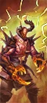 Forsaken of KhorneMelee Infantry |
T2 | 80 | 8,000 | 100 | 70 | 46 | 32 | 15 | 58 | — | 200 |
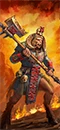 KhorngorsHalberd Infantry |
T2 | 120 | 9,600 | 60 | 62 | 38 | 18 | 26 | 28 | — | 181 |
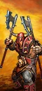 Marauders of Khorne (Dual Weapons)Dual Axe Infantry |
T2 | 120 | 9,360 | 35 | 60 | 35 | 34 | 17 | 40 | — | 138 |
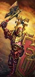 Chosen of KhorneAxe Infantry |
T3 | 80 | 10,480 | 130 | 85 | 28 | 46 | 55 | 48 | — | 325 |
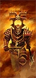 Chosen of Khorne (Dual Weapons)Dual Axe Infantry |
T3 | 80 | 10,480 | 130 | 85 | 28 | 46 | 49 | 69 | — | 363 |
 Exalted Bloodletters of KhorneGreatsword Infantry |
T3 | 100 | 9,200 | 40 | 80 | 38 | 42 | 34 | 44 | — | 300 |
SkullreapersDual Weapon Infantry |
T3 | 60 | 9,480 | 60 | 80 | 35 | 54 | 42 | 64 | — | 275 |
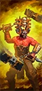 WrathmongersHammer Flail Infantry |
T4 | 32 | 10,080 | 70 | 85 | 40 | 60 | 46 | 80 | — | 375 |
怪步 / 飞行步兵6 个单位
| 兵种 | T | 兵模 | 生命 | 护甲 | 领导 | 速度 | 近攻 | 近防 | 武器 | 远程 / 射程 | 维护 |
|---|---|---|---|---|---|---|---|---|---|---|---|
 Chaos Furies (Khorne)Flying Melee Infantry |
T2 | 60 | 5,280 | 25 | 50 | 110 | 36 | 18 | 44 | — | 163 |
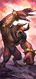 Bloodbeasts of KhorneMonstrous Infantry |
T3 | 16 | 8,256 | 40 | 75 | 65 | 38 | 28 | 140 | — | 275 |
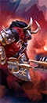 Minotaurs of KhorneMonstrous Infantry |
T3 | 16 | 8,704 | 70 | 70 | 56 | 34 | 27 | 110 | — | 338 |
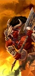 Minotaurs of Khorne (Great Weapons)Monstrous Infantry |
T3 | 16 | 8,704 | 70 | 70 | 56 | 34 | 27 | 110 | — | 338 |
Spawn of KhorneMonstrous Infantry |
T3 | 16 | 8,768 | 30 | 100 | 42 | 36 | 23 | 170 | — | 263 |
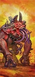 SlaughterbruteMonster |
T5 | 1 | 9,888 | 70 | 60 | 66 | 65 | 45 | 600 | — | 500 |
近战骑兵2 个单位
| 兵种 | T | 兵模 | 生命 | 护甲 | 领导 | 速度 | 近攻 | 近防 | 武器 | 远程 / 射程 | 维护 |
|---|---|---|---|---|---|---|---|---|---|---|---|
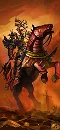 Chaos Knights of KhorneCavalry |
T3 | 60 | 8,100 | 130 | 75 | 70 | 42 | 45 | 53 | — | 350 |
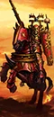 Chaos Knights of Khorne (Lances)Shock Cavalry |
T4 | 60 | 8,100 | 130 | 75 | 70 | 42 | 33 | 53 | — | 375 |
远程骑兵1 个单位
| 兵种 | T | 兵模 | 生命 | 护甲 | 领导 | 速度 | 近攻 | 近防 | 武器 | 远程 / 射程 | 维护 |
|---|---|---|---|---|---|---|---|---|---|---|---|
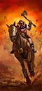 Marauder Horsemen of Khorne (Throwing Axes)Missile Cavalry |
T2 | 60 | 5,460 | 35 | 48 | 90 | 22 | 21 | 40 | 27 / 70m | 169 |
怪骑2 个单位
| 兵种 | T | 兵模 | 生命 | 护甲 | 领导 | 速度 | 近攻 | 近防 | 武器 | 远程 / 射程 | 维护 |
|---|---|---|---|---|---|---|---|---|---|---|---|
Bloodcrushers of KhorneMonstrous Cavalry |
T4 | 32 | 7,904 | 100 | 75 | 70 | 40 | 34 | 60 | — | 375 |
Skullcrushers of KhorneMonstrous Shock Cavalry |
T4 | 32 | 8,352 | 130 | 75 | 70 | 44 | 42 | 64 | — | 425 |
战车4 个单位
| 兵种 | T | 兵模 | 生命 | 护甲 | 领导 | 速度 | 近攻 | 近防 | 武器 | 远程 / 射程 | 维护 |
|---|---|---|---|---|---|---|---|---|---|---|---|
 Blood Shrine of KhorneMagic Chariot |
T2 | 1 | 4,696 | 110 | 60 | 68 | 34 | 18 | 325 | — | 238 |
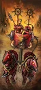 Chaos Chariots of KhorneChariot |
T2 | 4 | 5,736 | 120 | 70 | 78 | 22 | 23 | 40 | — | 213 |
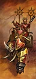 Gorebeast Chariots of KhorneMonstrous Chariot |
T3 | 4 | 6,560 | 130 | 70 | 66 | 35 | 27 | 70 | — | 325 |
 SkullcannonSiege Artillery |
T3 | 1 | 4,700 | 110 | 60 | 68 | 30 | 18 | 325 | 418 / 380m | 275 |
战兽2 个单位
| 兵种 | T | 兵模 | 生命 | 护甲 | 领导 | 速度 | 近攻 | 近防 | 武器 | 远程 / 射程 | 维护 |
|---|---|---|---|---|---|---|---|---|---|---|---|
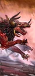 Chaos Warhounds of KhorneWar Beasts |
T1 | 80 | 6,080 | 25 | 38 | 95 | 26 | 12 | 22 | — | 113 |
Flesh Hounds of KhorneWar Beasts |
T2 | 32 | 6,176 | 30 | 60 | 95 | 36 | 26 | 58 | — | 188 |
巨兽3 个单位
| 兵种 | T | 兵模 | 生命 | 护甲 | 领导 | 速度 | 近攻 | 近防 | 武器 | 远程 / 射程 | 维护 |
|---|---|---|---|---|---|---|---|---|---|---|---|
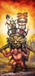 Chaos Warshrine of KhorneSupport Monster |
T3 | 1 | 11,250 | 70 | 60 | 38 | 35 | 25 | 375 | — | 325 |
 Soul Grinder of KhorneMonster |
T4 | 1 | 8,188 | 90 | 70 | 75 | 55 | 35 | 550 | 720 / 120m | 425 |
BloodthirsterFlying Monster |
T5 | 1 | 7,732 | 70 | 80 | 95 | 60 | 44 | 540 | — | 500 |
名将团10 个单位
| 兵种 | T | 兵模 | 生命 | 护甲 | 领导 | 速度 | 近攻 | 近防 | 武器 | 远程 / 射程 | 维护 |
|---|---|---|---|---|---|---|---|---|---|---|---|
Brutes of the Hound (Marauder Berserkers)Dual Axe Infantry · Renown |
T3 | 100 | 10,200 | 35 | 100 | 40 | 50 | 26 | 52 | — | 250 |
 Hellforged Bellowers (Skullcannon)Siege Artillery · Renown |
T3 | 1 | 4,700 | 110 | 70 | 68 | 50 | 32 | 325 | 361 / 160m | 400 |
 Hounds of the Blood Hunt (Flesh Hounds of Khorne)War Beasts · Renown |
T3 | 32 | 6,176 | 30 | 70 | 95 | 45 | 34 | 58 | — | 250 |
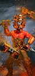 Bloodwake Berserkers (Wrathmongers)Hammer Flail Infantry · Renown |
T4 | 32 | 10,080 | 70 | 95 | 40 | 73 | 57 | 80 | — | 438 |
 Hellforged Host (Exalted Bloodletters of Khorne)Greatsword Infantry · Renown |
T4 | 100 | 9,200 | 60 | 90 | 38 | 52 | 43 | 44 | — | 375 |
 Heralds of Khorne's Fury (Bloodcrushers of Khorne)Monstrous Cavalry · Renown |
T4 | 32 | 7,904 | 100 | 85 | 70 | 50 | 43 | 60 | — | 425 |
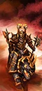 Knights of the Brazen Throne (Skullcrushers of Khorne)Monstrous Shock Cavalry · Renown |
T4 | 32 | 8,352 | 130 | 85 | 70 | 54 | 52 | 64 | — | 475 |
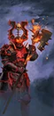 The Slaughtergard (Chosen of Khorne – Halberds)Halberd Infantry · Renown |
T4 | 80 | 10,480 | 130 | 95 | 28 | 45 | 63 | 46 | — | 450 |
 Khorne’s Bloody Fist (Bloodthirster)Flying Monster · Renown |
T5 | 1 | 7,732 | 70 | 90 | 95 | 73 | 54 | 540 | — | 588 |
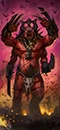 The Bloodbrute Behemoth (Ghorgon)Monster · Renown |
T5 | 1 | 10,888 | 70 | 90 | 64 | 69 | 38 | 520 | — | 638 |
已排除“扩展名册（extended roster）”单位。数值为 Patch 9.0.4；不同版本可能微调。
04 / ARMY BUILD配兵思路
先按角色填槽，再按对手换兵。下面是一个通用的 20 槽骨架，以及用本页推荐兵种拼出的示例。
| 角色 | 建议槽位 | 说明 |
|---|---|---|
| 扛线 | 5–6 | 持盾 / 重甲步兵，任务是站住，不是杀敌。 |
| 远程 | 3–5 | 弓箭、火枪或炮兵；至少 2 队能打重甲。 |
| 机动 | 3–4 | 骑兵、战车、飞行单位；包抄、背冲、追逃。 |
| 巨兽 / 炮兵 | 1–3 | 破阵、斩将、攻城；别孤军深入。 |
| 英雄 | 1–3 | 法师 + 支援英雄，嵌入主力。 |
示例：4× 恐虐血魔 + 2× 颅骨收割者 + 3× 血肉猎犬 + 2× 嗜血者 + 领主 + 1 英雄，余下 3–4 槽按对手补破甲 / 反大型 / 炮兵。
重甲多带破甲（火枪、大炮、巨斧）；巨兽多带反大型（长戟、弩炮）；鼠人 / 绿皮多带范围伤害（吹息、炮兵、火焰）；骑兵多留 2 队长戟或反大型。不要一套配兵打到底。